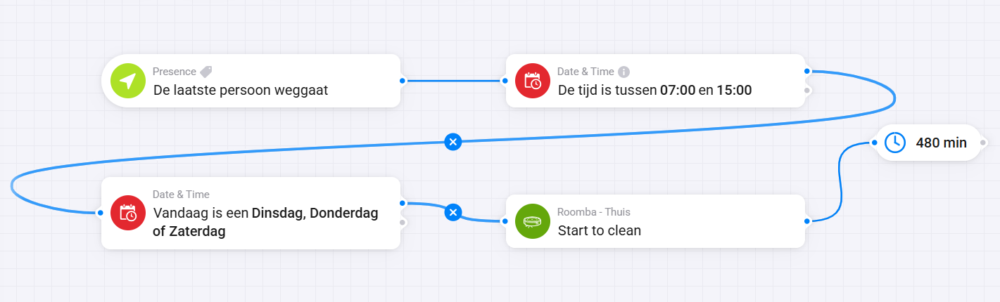
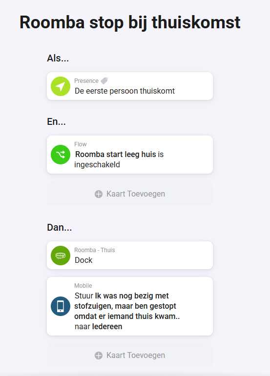
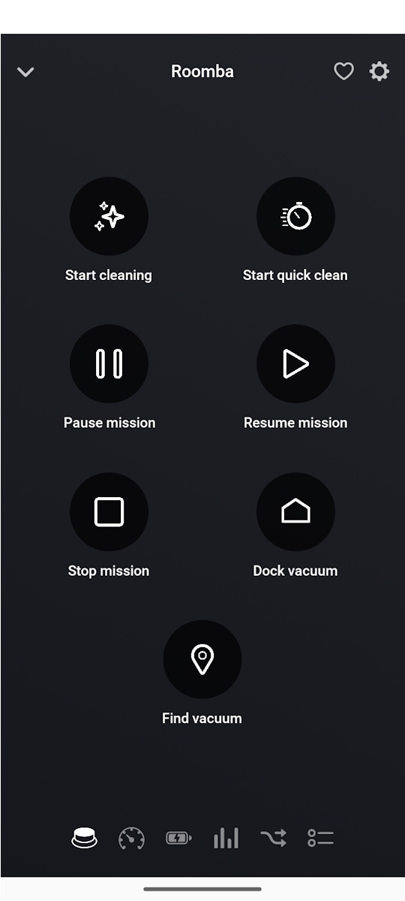
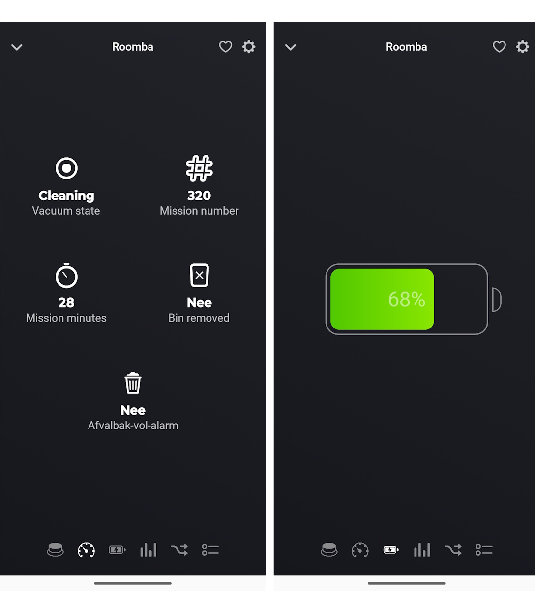

Veel robotstofzuigers werken met vaste schema’s. Dat klinkt handig, maar sluit vaak slecht aan op hoe je dag daadwerkelijk verloopt.
Met Homey kun je dat slimmer aanpakken. In plaats van een tijdstip, laat je je huis bepalen wanneer het moment goed is. Zo voorkom je irritatie én haal je meer uit je apparaat.
Wat leer je in deze tutorial?
Je leert hoe je een robotstofzuiger aanstuurt op basis van aanwezigheid in plaats van tijd.
- Starten op het juiste moment → de robot begint automatisch wanneer het huis leeg is
- Stoppen bij thuiskomst → de robot stopt direct zodra iemand thuiskomt
Na deze tutorial heb je een automatisering die logisch aanvoelt en direct waarde toevoegt in het dagelijks gebruik.
Voor wie is deze tutorial?
Voor Homey-gebruikers die al met flows werken of daar net mee beginnen, en hun robotstofzuiger slimmer willen laten samenwerken met hun dagelijkse ritme.
Wat heb je nodig?
- Een Homey
- Een gekoppelde robotstofzuiger binnen Homey
- Presence of aanwezigheid correct ingesteld in Homey
- Een bestaande of nieuwe flow voor vertrek en thuiskomst
- Een paar minuten om de logica goed in te stellen en te testen
Handige links bij dit project
Dit zijn producten die aansluiten op de benodigdheden in dit artikel.
Stap-voor-stap uitleg
1. Maak de start-flow om te stofzuigen in een leeg huis
De eerste (geavanceerde) flow zorgt ervoor dat de robotstofzuiger automatisch start zodra de laatste persoon het huis verlaat. Door een tijdsvenster en vaste dagen toe te voegen, voorkom je dat de robot op ongewenste momenten begint.
- Als: de laatste persoon weggaat
- En: de tijd is tussen 07:00 en 15:00
- En: vandaag is bijvoorbeeld dinsdag, donderdag of zaterdag
- Dan: Start to clean
- Wacht: gebruik een timer van 480 minuten om te voorkomen dat de flow meerdere keren per dag wordt geactiveerd (dit komt overeen met het tijdsvenster van 07:00 tot 15:00)

2. Voeg de juiste actie toe
Voeg in het “Dan”-gedeelte de actie toe om de robotstofzuiger te starten. In jouw voorbeeld is dat de schoonmaakactie van de Roomba zelf.
3. Maak de stop-flow voor thuiskomst
De tweede flow zorgt ervoor dat de robot netjes stopt zodra de eerste persoon thuiskomt. Daarmee maak je de automatisering veel prettiger in gebruik.
Als: De eerste persoon thuiskomt
En: De flow “Roomba start leeg huis” is ingeschakeld
Dan: Dock4. Test beide flows bewust
Controleer of de start-flow alleen onder de juiste voorwaarden afgaat en of de robot bij thuiskomst inderdaad terugkeert naar het dock.
5. Pas de logica aan op jouw situatie
Je kunt tijden, dagen en voorwaarden aanpassen aan je eigen huishouden. Daardoor voelt de flow niet algemeen, maar echt van jou.

Integratie met Homey
Homey maakt dit soort automatiseringen sterk omdat het niet alleen apparaten aanstuurt, maar ook context begrijpt. Aanwezigheid, tijd en apparaatacties komen samen in één logische flow.
Dat maakt dit type automatisering interessant voor meerdere situaties:
- Je robot alleen laten rijden wanneer het huis echt leeg is
- Ongewenste schoonmaakmomenten voorkomen
- Je schoonmaakroutine laten aansluiten op je werkelijke dagindeling

Wat kun je hierna?
Als deze basis eenmaal goed werkt, kun je verder bouwen met extra voorwaarden, statusinformatie of andere slimme routines. Denk bijvoorbeeld aan meldingen, batterijstatus of combineren met andere aanwezigheidsscenario’s.

Veelgemaakte fouten en aandachtspunten
- Presence werkt alleen goed als alle betrokken gebruikers correct in Homey zijn ingesteld
- Controleer of je robotstofzuiger in Homey ook echt de juiste acties ondersteunt
- Voorkom dubbele of overlappende flows die elkaar ongewenst kunnen triggeren
Conclusie
Met twee relatief eenvoudige flows verander je een standaard robotstofzuiger in een apparaat dat veel beter aansluit op je dagelijkse leven. Dat is precies waar Homey sterk in is: niet alleen apparaten bedienen, maar ze laten reageren op wat er echt gebeurt.